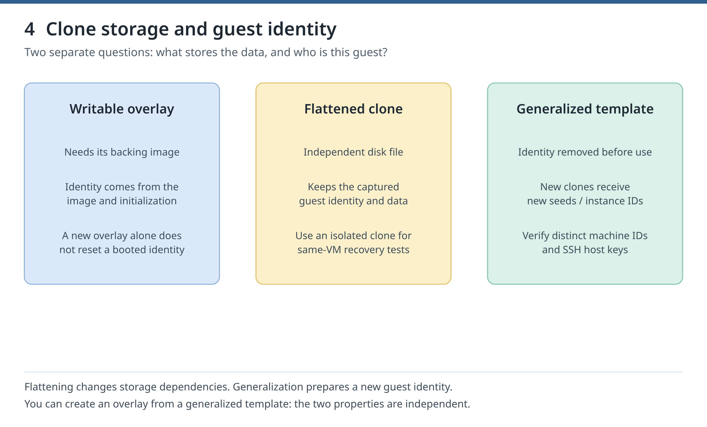

You are previewing Day 5. It builds on Day 4, which you have not finished yet. Everything here works, and jumping ahead is allowed.
1 Mission briefing
Tonight you will
Customize a copy of the verified Fedora image offline and record a manifest of what went in.
Generalize a template so that every guest made from it gets its own identity.
Provision two guests from the template and prove their identities differ.
Show that a new seed with the old instance ID does not rerun first-boot setup, then fix it.
Find who controls linux-01's socket, QEMU process, disk and console, then log in on the serial console of a guest whose network is down.
Why it matters
A flattened disk still carries the identity of the machine it came from, so guests need a generalized template to get their own. And unrestricted management access to qemu:///system is effectively root on the host: tonight you map that authority, and tomorrow you restrict it.
Time
about 3 h 35 min: about 2 h 35 min of lab work (authored per section, including waits for VMs to boot and downloads) plus about 1 h 00 min of ideas and checks.
Before you start
Run today's blocks in bash (type bash first if your terminal runs zsh or fish), in order, in one terminal: some reuse variables that an earlier block set.see Front matter: Setup 4. Work one checkpoint at a time
Chapter 6. See who controls each part of a VM, reach a guest without network through its serial console, prove an SELinux denial, and limit which VMs a user controls. Unrestricted management access to qemu:///system is effectively root on the host; 6.4 shows how API access rules restrict it.
2 Concepts, one idea at a time
Idea 1 of 6
Identity travels with the disk
A flattened disk no longer needs its base, but it still carries the identity of the machine it came from: hostname, machine ID, SSH host keys and cloud-init's record of its first boot. A template has that identity removed, or generalized, so every guest made from it gets its own.

Figure 4. Storage independence and guest identity are separate checks.(manual)
libguestfs tools such as virt-customize change an image without booting the guest in it: they boot a tiny helper VM of their own, the appliance, with the image attached. A manifest records the build's inputs: the source image, its checksum and the tool versions. The build's own checksum is added at the end.
Boot the build once to test it, then remove the identity that boot created. cloud-init clean deletes what cloud-init keeps, as the guest's last action. Flatten the stopped disk into template.qcow2; virt-sysprep then cleans what the operating system keeps, here SSH host keys, machine ID, DHCP leases and log files. Never boot the template itself.
cloud-init runs some modules, such as runcmd, once per instance: once per instance ID from the seed's meta-data. A new seed with the old instance ID does not rerun first-boot setup on a disk that has already booted. A new instance ID makes cloud-init rerun runcmd and make new SSH host keys.
DAC is Unix owners and modes; SELinux adds rules that even root obeys. sVirt gives each course QEMU process the type svirt_t and its writable disk svirt_image_t, with matching MCS categories. With Fedora's default qemu:///system configuration they all run as qemu, so distinct categories separate their private disks. A second chain runs inside the guest: SSH → fedora → guest sudo.
Unplug a guest's virtual cable with domif-setlink … down and SSH fails. The serial console needs no network: log in as an account in the wheel group, which may use sudo with its own password. SSH password login stays off, so the password logs you in on the console but not over SSH; sudo asks for the same password.
A safe practice shell. It knows today's key commands and answers with the real output recorded in the manual on the validation host. Nothing runs on your machine; the real lab below is where it counts.
4 Real lab
These are the manual's validated sections, word for word, as a checklist. Run them on your Fedora 44 host in order. Tick each step after it ran, and tick Check passed once the check holds. Copy buttons copy the exact command.
Figure 4. Storage independence and guest identity are separate checks.
A flattened disk (chapter 4.3) no longer needs its base, but it still carries the identity of the machine it came from: hostname, machine ID, SSH host keys and cloud-init's record of its first boot. A template is an image with that identity removed, or generalized, so that every guest made from it gets its own. The image tools in this chapter change disks offline; never point them at the disk of a running guest. Blocks in parentheses stop at their first failing command (chapter 0.3).
No such file or directory: save the 1.7 scripts. exists and is not a course guest: a VM of yours is called linux-01; leave it alone and do not run the course on this host (chapter 1.4). Otherwise read the message it printed.
libguestfs tools such as virt-customize open a disk image by booting a tiny helper VM of their own, the appliance, with the image attached. Save a helper that runs them as root (the pool's images belong to root), starts the appliance with QEMU directly, not through libvirt (LIBGUESTFS_BACKEND=direct), and keeps its cache and temporary files in ~/kvm-course/ch05/guestfs:
cat > ~/kvm-course/bin/guestfs.sh <<'BASH'
#!/usr/bin/env bash
# guestfs.sh TOOL ARGS...: run a libguestfs tool as root, keeping its files in ~/kvm-course/ch05/guestfs
set -euo pipefail
G=$HOME/kvm-course/ch05/guestfs
mkdir -p "$G"
exec sudo env LIBGUESTFS_BACKEND=direct LIBGUESTFS_CACHEDIR="$G" LIBGUESTFS_TMPDIR="$G" "$@"
BASH
Copy the base into build.qcow2 and list its filesystems without booting it. Inside the appliance the image is /dev/sda; a guest sees the same disk as /dev/vda. --format=qcow2 states the format, so the tool never guesses:
(
set -euo pipefail
P=/var/lib/libvirt/images/kvm-course
if sudo test -e "$P/build.qcow2"; then echo 'STOP: build.qcow2 already exists; run the chapter Clean up first'; false; fi
sudo install -m 0644 "$P/base.qcow2" "$P/build.qcow2"
bash ~/kvm-course/bin/guestfs.sh virt-filesystems --format=qcow2 -a "$P/build.qcow2" --filesystems --long -h
)
virt-customize adds a marker line to /etc/course-build inside the image and then relabels the files for SELinux by itself. Make the build read-only and add its checksum to the manifest:
(
set -euo pipefail
P=/var/lib/libvirt/images/kvm-course
bash ~/kvm-course/bin/guestfs.sh virt-customize --format=qcow2 -a "$P/build.qcow2" \
--append-line /etc/course-build:fedora44-course-v1
sudo chmod 0444 "$P/build.qcow2"
sudo sha256sum "$P/build.qcow2" | tee -a ~/kvm-course/ch05/manifest.txt
)
Expected output
Excerpt (… marks a cut); versions and checksums differ:
guestfs-tools-1.56.0-1.fc44.x86_64
/dev/sda3 filesystem btrfs fedora 4.9G -
[ 3.6] Setting a random seed
[ 3.6] Appending line to /etc/course-build
[ 3.6] SELinux relabelling
bff84b655a403a75… /var/lib/libvirt/images/kvm-course/build.qcow2
Check
The manifest names the source, its checksum, the tool versions and the build's checksum.
If it fails
The appliance does not start: add -v -x after the tool name for a detailed log; keep SELinux enforcing. No btrfs line: a wrong or damaged file; compare its checksum with the manifest.
Boot the build once to test it, then remove the identity that the boot created.
Boot template-01 on an overlay of build.qcow2, as in chapter 1, and read the marker. The boot gives the guest an identity: a machine ID (/etc/machine-id, systemd's ID for this installation), SSH host keys, DHCP leases, logs and cloud-init's record of its instance:
cloud-init clean deletes what cloud-init keeps under /var/lib/cloud, so that it runs its first-boot setup again on the next boot; --seed also removes /var/lib/cloud/seed, where an image can carry seed files, and --configs network removes the network settings cloud-init wrote. virt-sysprep, below, removes the logs and the machine ID. Run cloud-init clean as the guest's last action, then shut the guest down:
Flatten the stopped disk into a standalone template.qcow2 (chapter 4.3). virt-sysprep then cleans what the operating system keeps; --operations picks the SSH host keys, the machine ID, DHCP leases and log files. Make the template read-only and record its checksum:
(
set -euo pipefail
P=/var/lib/libvirt/images/kvm-course
if sudo test -e "$P/template.qcow2"; then echo 'STOP: template.qcow2 already exists and guests may depend on it'; false; fi
sudo qemu-img convert -O qcow2 "$P/template-01.qcow2" "$P/template.qcow2"
bash ~/kvm-course/bin/guestfs.sh virt-sysprep --format=qcow2 -a "$P/template.qcow2" \
--operations ssh-hostkeys,machine-id,dhcp-client-state,logfiles
sudo chmod 0444 "$P/template.qcow2"
sudo sha256sum "$P/template.qcow2" | tee ~/kvm-course/ch05/template.sha256
)
Never boot template.qcow2 itself; guests boot from overlays on it. It holds the course's SSH public key, so your course key can log in to every guest made from it: do not share it outside your lab.
template-01 was shut off before sysprep ran, sysprep performed the four operations, and template.qcow2 has a recorded checksum.
If it fails
stop-guest.sh times out: never sysprep a disk that a running VM may still write; find out why it did not stop. sysprep stops with an error: delete template.qcow2 and flatten again; a half-cleaned template gives its guests duplicate identities.
Create two guests from the template and show that each has its own identity.
Check that the template is the one you recorded, then create linux-02 and clone-01 as overlays on it. Each gets its own seed, with a new hostname and a new cloud-init instance ID, and virt-install gives each a new UUID and MAC address. Save each guest's machine ID, SSH host-key fingerprint and instance ID in a file; cut keeps only the fingerprint, because the comment after it (root@NAME) is a free label, not part of the key:
(
set -euo pipefail
P=/var/lib/libvirt/images/kvm-course
sudo sha256sum -c ~/kvm-course/ch05/template.sha256
for name in linux-02 clone-01; do
if sudo test -e "$P/$name.qcow2"; then echo "STOP: $name.qcow2 already exists"; false; fi
bash ~/kvm-course/bin/seed.sh "$name"
sudo install -m 0644 ~/kvm-course/"$name"/seed.iso "$P/$name-seed.iso"
sudo qemu-img create -f qcow2 -F qcow2 -b "$P/template.qcow2" "$P/$name.qcow2" 20G
bash ~/kvm-course/bin/launch.sh "$name"
bash ~/kvm-course/bin/trust.sh "$name"
ssh -n -F ~/kvm-course/ssh/config "$name" 'cat /etc/machine-id; sudo ssh-keygen -lf /etc/ssh/ssh_host_ed25519_key.pub | cut -d" " -f2; cloud-init query v1.instance_id' > ~/kvm-course/ch05/"$name".id
done
)
paste shows the two files side by side; grep -Fxf A B prints the lines of B that also appear in A, and must print nothing. Then show each guest's build marker and VM UUID:
(
set -euo pipefail
cd ~/kvm-course/ch05
paste linux-02.id clone-01.id
if grep -Fxf linux-02.id clone-01.id; then echo 'UNEXPECTED: the guests share an identity'; false; fi
for name in linux-02 clone-01; do
ssh -n -F ~/kvm-course/ssh/config "$name" 'cat /etc/course-build'
sudo virsh -c qemu:///system domuuid "$name"
done
)
Each machine ID is its VM's UUID without the dashes: sysprep emptied /etc/machine-id, so systemd took the UUID that libvirt gives the virtual firmware (DMI product_uuid, machine-id(5)). A copy that kept its domain UUID would keep its machine ID too.
The machine IDs, key fingerprints and instance IDs differ, both guests have the marker, each machine ID matches its VM's UUID, and the template checksum was OK.
If it fails
grep printed a line: the template was not generalized; rebuild it from 5.2 instead of repairing the guests.
Show that a new seed with the old instance ID does not rerun first-boot setup on a disk that has already booted, then fix it.
cloud-init runs some modules once per instance, that is, once per instance ID from the seed's meta-data, and records the ID it has handled under /var/lib/cloud. runcmd, which runs shell commands, is one of them. Build the disposable guest profile-probe with a runcmd line that appends first to a file; after editing user-data, rebuild the seed with cloud-localds (chapter 1.2):
Change the runcmd line to second and rebuild the seed with the same meta-data, so the instance ID stays. Stop the guest, put the new seed in the pool and start the guest. cloud-init knows this instance ID, so runcmd does not run again and the file keeps one line:
(
set -euo pipefail
P=/var/lib/libvirt/images/kvm-course
bash ~/kvm-course/bin/stop-guest.sh profile-probe
sed -i 's/echo first/echo second/' ~/kvm-course/profile-probe/user-data
cloud-localds ~/kvm-course/profile-probe/seed.iso ~/kvm-course/profile-probe/user-data ~/kvm-course/profile-probe/meta-data
sudo install -m 0644 ~/kvm-course/profile-probe/seed.iso "$P/profile-probe-seed.iso"
sudo virsh -c qemu:///system start profile-probe
bash ~/kvm-course/bin/trust.sh profile-probe
lines=$(ssh -F ~/kvm-course/ssh/config profile-probe 'cat /var/tmp/runcmd.txt')
echo "$lines"
if [ "$lines" != first ]; then echo 'UNEXPECTED: runcmd ran again'; false; fi
)
Fix it with a new instance ID. cloud-init then treats the disk as a new instance: it reruns runcmd and makes new SSH host keys. Empty the old serial log first, so that trust.sh waits for this boot's fingerprints and checks the new key against them:
(
set -euo pipefail
P=/var/lib/libvirt/images/kvm-course
bash ~/kvm-course/bin/stop-guest.sh profile-probe
printf 'instance-id: profile-probe-%s\n' "$(cat /proc/sys/kernel/random/uuid)" > ~/kvm-course/profile-probe/meta-data
cloud-localds ~/kvm-course/profile-probe/seed.iso ~/kvm-course/profile-probe/user-data ~/kvm-course/profile-probe/meta-data
sudo install -m 0644 ~/kvm-course/profile-probe/seed.iso "$P/profile-probe-seed.iso"
sudo truncate -s 0 /var/log/libvirt/qemu/profile-probe-console.log
sudo virsh -c qemu:///system start profile-probe
bash ~/kvm-course/bin/trust.sh profile-probe
lines=$(ssh -F ~/kvm-course/ssh/config profile-probe 'cat /var/tmp/runcmd.txt')
echo "$lines"
if [ "$lines" != "$(printf 'first\nsecond')" ]; then echo 'UNEXPECTED: runcmd did not run again'; false; fi
)
Expected output
The file printed first after the first boot, still only first after the boot with the old instance ID, and then:
first
second
Check
One line with the old instance ID; two lines with the new one; trust.sh checked the new host key against this boot's console.
If it fails
Two lines already after the second boot: compare cloud-init query v1.instance_id in the guest with the seed's meta-data. trust.sh stops at the fingerprint: read the console log; never accept a changed host key without that check.
Clean up
profile-probe is disposable; the chapter Clean up removes it.
To rebuild the template later, keep a copy of manifest.txt (the Clean up deletes it), repeat 5.1 and 5.2, and compare: the source checksum and tool versions should match, but the build checksum never does, because virt-customize writes a new random seed into each build (Setting a random seed). An independent rebuild by another person on another host is not validated here.
Keep linux-01 for chapter 6. Nothing later needs linux-02 or the template. Remove the four guests with chapter 1's helper, then the images build.qcow2 and template.qcow2 with virsh vol-delete, then this chapter's files (some belong to root) and the helper. The block stops if a guest cannot be removed, before any image it may use is deleted:
(
set -euo pipefail
for name in template-01 clone-01 profile-probe linux-02; do
bash ~/kvm-course/bin/remove-guest.sh "$name"
done
for vol in build.qcow2 template.qcow2; do
if sudo virsh -c qemu:///system vol-info --pool kvm-course "$vol" >/dev/null 2>&1; then
sudo virsh -c qemu:///system vol-delete --pool kvm-course "$vol"
fi
done
sudo rm -rf ~/kvm-course/ch05
rm -f ~/kvm-course/bin/guestfs.sh
)
To remove the whole course instead, use Appendix B.
See who controls each part of a VM, reach a guest without network through its serial console, prove an SELinux denial, and limit which VMs a user controls. Unrestricted management access to qemu:///system is effectively root on the host; 6.4 shows how API access rules restrict it.
If you removed the course, save the 1.7 scripts again first. LC_ALL=C keeps output in English for later checks. new-guest.sh starts linux-01, or builds it:
No such file: save the 1.7 scripts. STOP: linux-01 exists and is not a course guest: that VM is yours; leave it alone and do not run the course on this host (chapter 1.4).
Find who controls linux-01's socket, QEMU process, disk, console and guest users.
Discretionary access control (DAC) means Unix owners and modes; SELinux adds rules that even root obeys. sVirt gives each course QEMU process the type svirt_t and its writable disk svirt_image_t, with matching MCS (Multi-Category Security) categories, such as c18,c616. By Fedora's default these processes run as qemu; their distinct categories separate the guests' private disks:
The devices: a network card, a logged serial console and a channel to the guest agent, a guest service that runs host requests (6.5). No <graphics> means libvirt configured no VNC or SPICE screen for linux-01:
sudo virsh -c qemu:///system dumpxml linux-01 > ~/kvm-course/ch06/linux-01.xml
grep -E "<interface |<serial |<log |<channel " ~/kvm-course/ch06/linux-01.xml
if grep '<graphics' ~/kvm-course/ch06/linux-01.xml; then echo 'UNEXPECTED: linux-01 has a screen'; false; fi
Every local user may connect to both libvirt sockets; polkit, the authorization service, decides what they may do. The -ro socket only reads; read-write use needs the polkit action org.libvirt.unix.manage. Root has it, and Fedora's rule /usr/share/polkit-1/rules.d/50-libvirt.rules gives it to every member of the libvirt group without a password: that membership is effectively root. In the guest, fedora is in wheel, Fedora's administrator group, with passwordless sudo from cloud-init:
ls -lZ /run/libvirt/virtqemud-sock /run/libvirt/virtqemud-sock-ro
getent group libvirt
ssh -F ~/kvm-course/ssh/config linux-01 'set -e; id; getenforce'
Expected output
Trimmed; categories and the group number differ. The course adds no one to the libvirt group (chapter 0.3): after the last colon you see only existing members, such as the validation account daniel, or nothing:
Process and disk carry the same categories. Draw the chains: sudo → socket → QEMU → disk and console; SSH → fedora → guest sudo. Anyone listed in the libvirt group can do what sudo does here, without a password.
If it fails
No PID file: repeat 6.0. A disk without categories: run getenforce; never turn SELinux off.
Log in on the serial console with a password and administer a guest whose network is down.
Create recovery on disposable profile-probe: -m makes its home; -G wheel allows sudo with its own password. ssh_pwauth: false (chapter 1) keeps SSH password login off while you enable console login:
Unplug the virtual cable with domif-setlink … down (chapter 3.4); SSH must fail:
MAC=$(sudo virsh -c qemu:///system domiflist profile-probe | awk '$3=="default" {print $5}')
sudo virsh -c qemu:///system domif-setlink profile-probe "$MAC" down
if ssh -F ~/kvm-course/ssh/config -o ConnectTimeout=3 profile-probe true; then
echo 'UNEXPECTED: SSH still works'; false
else
echo 'expected: SSH fails while the link is down'
fi
The console needs no network. Log in as recovery, prove admin rights with sudo -v, and look at the card with ip -br link. exit logs out; Ctrl+] leaves the console. Type:
uid=1001(recovery) gid=1001(recovery) groups=1001(recovery),10(wheel)
expected: SSH fails while the link is down
profile-probe login: recovery
[recovery@profile-probe ~]$ ip -br link
enp1s0 DOWN 52:54:00:d1:a3:de <NO-CARRIER,BROADCAST,MULTICAST,UP>
active
Check
During the outage SSH failed while console login and sudo worked; SSH returned after the repair. No autologin or passwordless sudo was added.
If it fails
No login:: press Enter again; serial-getty@ttyS0 must be active (1.5). Login incorrect: set the password again. sudo refuses: id recovery must show wheel.
Clean up
Keep profile-probe for 6.3; the chapter Clean up deletes it.
Every answer explains itself and links to the manual section it comes from. Tip: with a question focused, keys 1 to 4 pick an answer.
6 Boss challenge
7 Recap
Flashcards
Today's badge
Twin Breaker
You built a generalized template, proved that its guests each have their own identity, mapped who controls a VM and logged in through the serial console with the network down.
Complete the day to earn it.
Tomorrow
Tomorrow starts at 6.3, so keep profile-probe and linux-01 running. You prove an SELinux denial, limit which VMs a libvirt user controls, check who can read the course's secrets, then back up linux-01 and prove every restore with checksums.